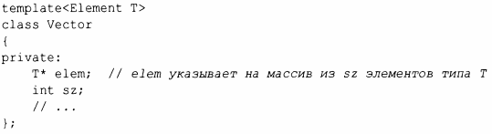
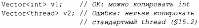

⇐6.2 Параметризованные типы 6.2.2 Аргументы-значения шаблонов⇒
Чаще всего шаблон имеет смысл только для аргументов шаблона, которые отвечают определенным критериям. Например, Vector обычно предлагает операцию копирования и, если это так, должен требовать, чтобы его элементы были копируемы. То есть мы должны требовать, чтобы аргумент шаблона Vector был не просто typenarne, а Elernent, где "Elernent" определяет требования к типу, которому могут принадлежать элементы:
Этот префикс ternplate<Elernent Т> представляет собой С++-версию математического выражения "для всех Т, таких, что Elernent (Т)"; т.е. Elernent является предикатом, который проверяет, обладает ли Т всеми свойствами, которые требует Vector. Такой предикат называется концептом (concept) (§7.2). Шаблонный аргумент, для которого указан концепт, называется ограниченным аргументом, а шаблон, для которого аргумент ограничен, - ограниченным шаблоном.
Попытка инстанцирования шаблона с типом, не соответствующим его требованиям, является ошибкой времени компиляции. Например
Поскольку официально до стандарта С++20 язык программирования С++ концепты не поддерживает, более старый код использует неограниченные аргументы шаблона и указывает необходимые требования в документации.